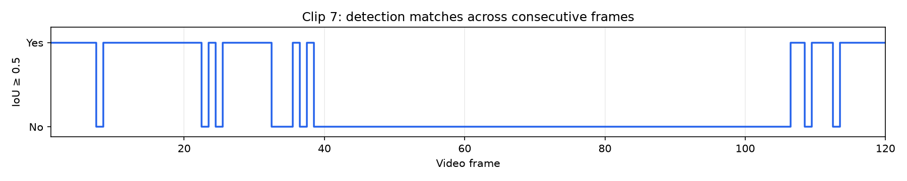
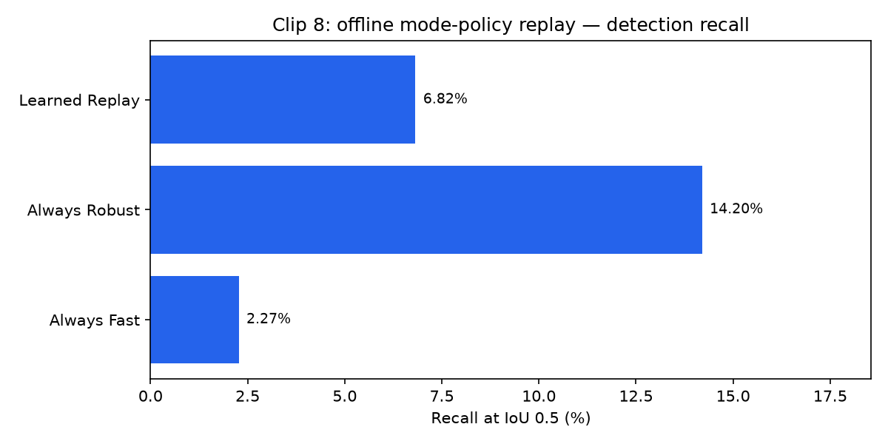
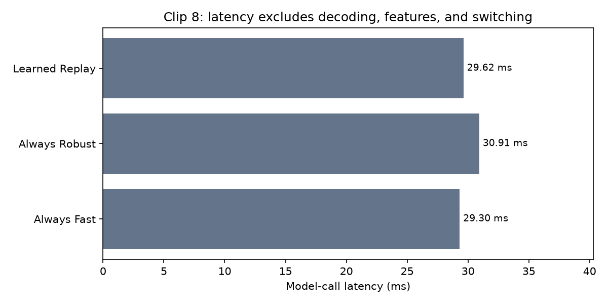

Recorded-video detector baseline and archived still-frame mode-choice experiment. Not a deployed or complete tracking system.
Longest unmatched interval: frames 39–106.
Green boxes are Purdue reference annotations; magenta boxes are independent detector predictions. No predicted tracking IDs are shown.
| Policy | TP | FP | FN | Precision % | Recall % | Latency ms |
|---|---|---|---|---|---|---|
| ALWAYS_FAST | 4 | 58 | 172 | 6.45 | 2.27 | 29.305 |
| ALWAYS_ROBUST | 25 | 92 | 151 | 21.37 | 14.2 | 30.913 |
| LEARNED_OFFLINE_REPLAY | 12 | 60 | 164 | 16.67 | 6.82 | 29.619 |
Always ROBUST has better recall than learned replay. These are archived still-image results, not video-tracking metrics.



Benchmark clip rows: {'Clip 7': 180, 'Clip 8': 180}
Latency excludes frame decoding, feature extraction and switching overhead.